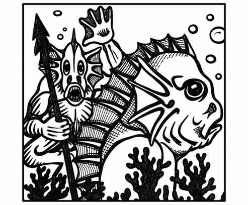

洛卡萨 · Locathah
 |
|
洛卡萨是水生游牧类人生物，游荡于温暖丰饶的浅海水域，以狩猎和采集为生。
每遇到 40 名洛卡萨，就会有一名首领（生命值 18，按 4 级战士计算）和四名助手（生命值 14，按 3 级战士计算）。若遇到 120 名以上，还会有一名首领（生命值 22，按 5 级战士计算）及 12 名护卫（生命值 12–14，按 3 级战士计算）。
洛卡萨总是骑乘巨型鳗鱼作战，坐骑也会加入战斗（巨型鳗鱼数据见“鳗鱼”条目）。典型洛卡萨队伍的武器配备如下：
| 武器 | 概率 |
|---|---|
| 骑枪 | 20% |
| 弩 | 30% |
| 三叉戟 | 30% |
| 渔网与匕首 | 20% |
洛卡萨的巢穴通常是一座海底城堡般的岩体，它们在其中凿出房间、通道等空间。巢穴由坚固的大门守卫，并有 4–16 只海鳗把守；另有 50% 概率布设葡萄牙战舰水母陷阱。
外观。 洛卡萨的鳞片呈淡黄色。耳部生有扇形鳍以增强听觉，眼睛较大，便于在水下观察；背部的鳞片与鳍色泽比身体前侧更深。